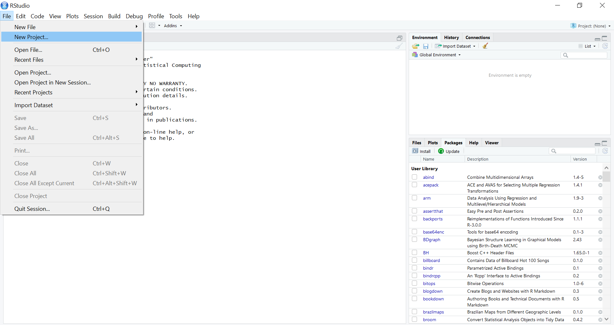
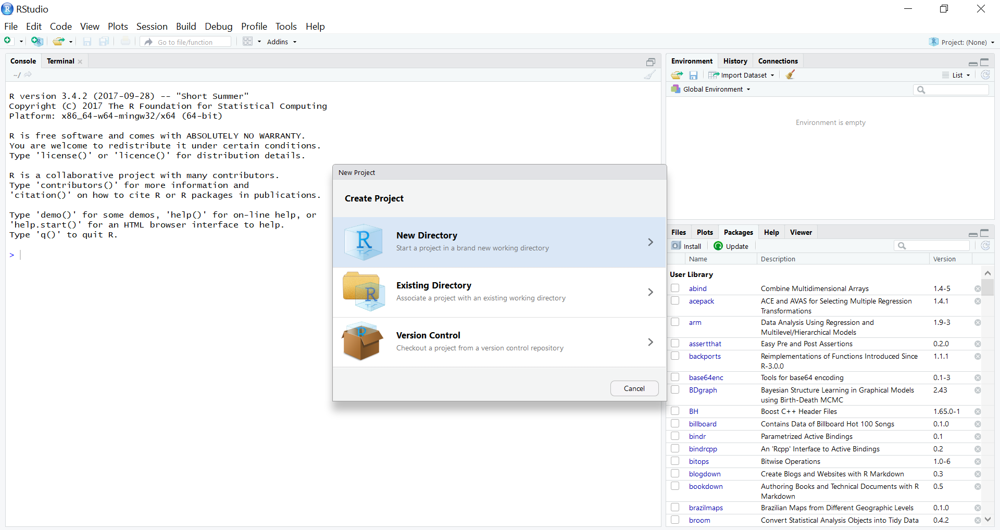
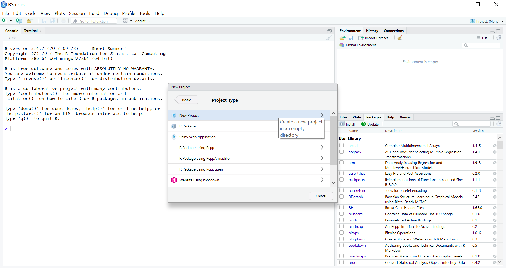
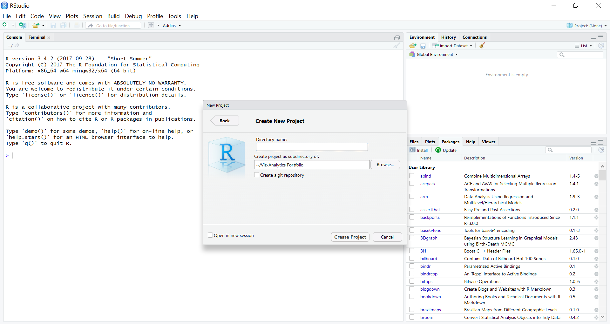
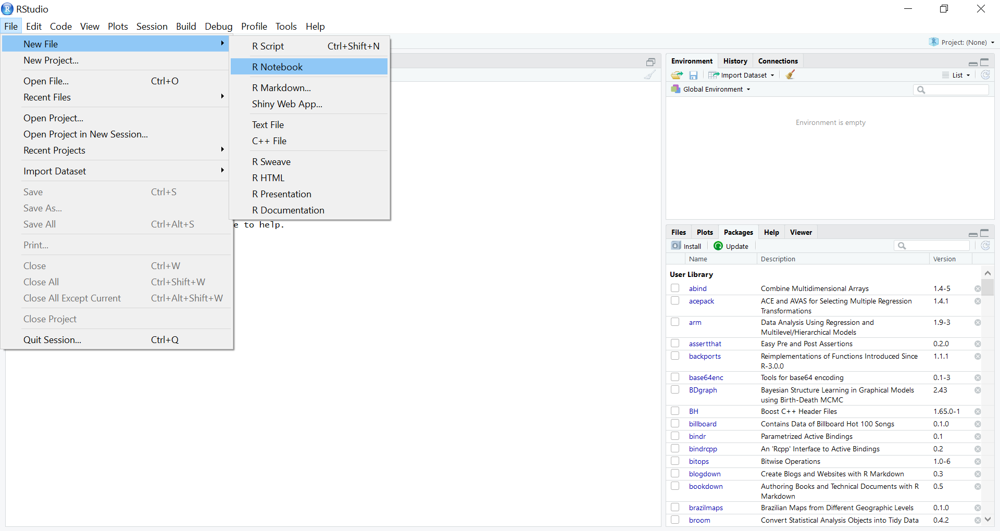
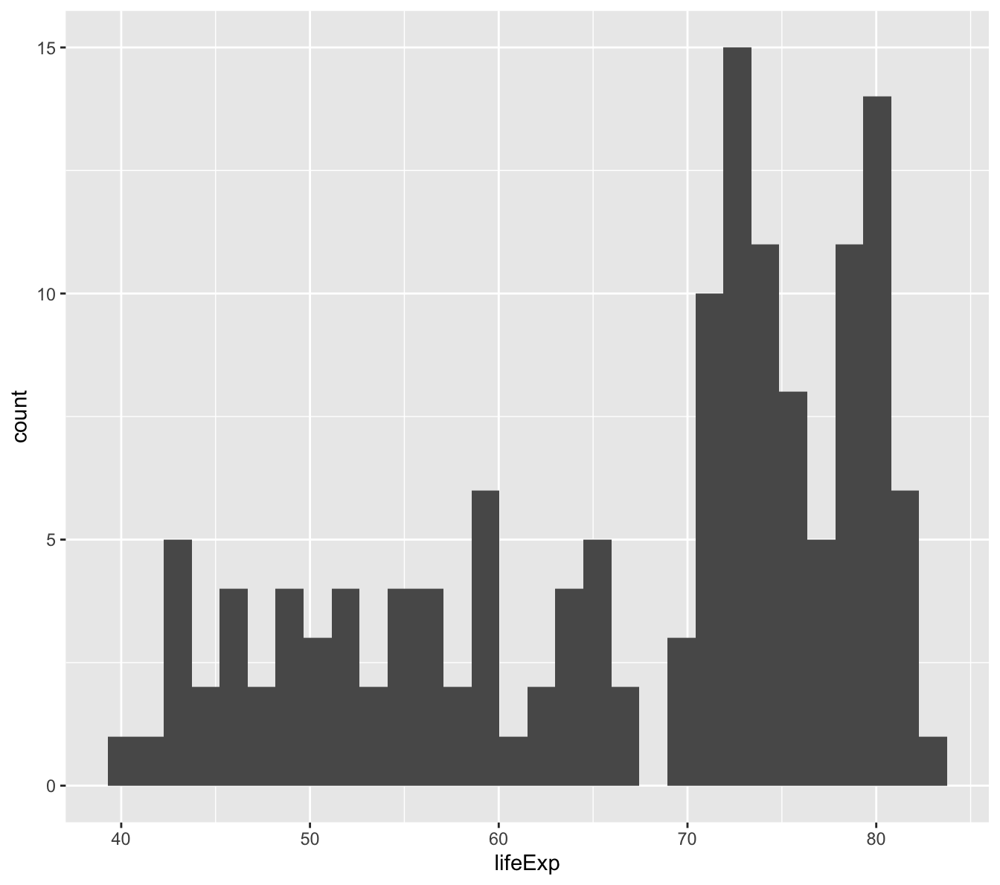
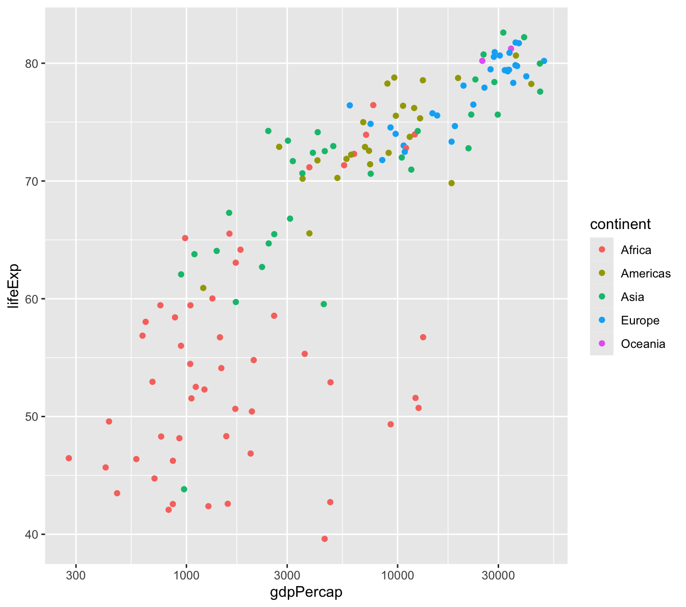
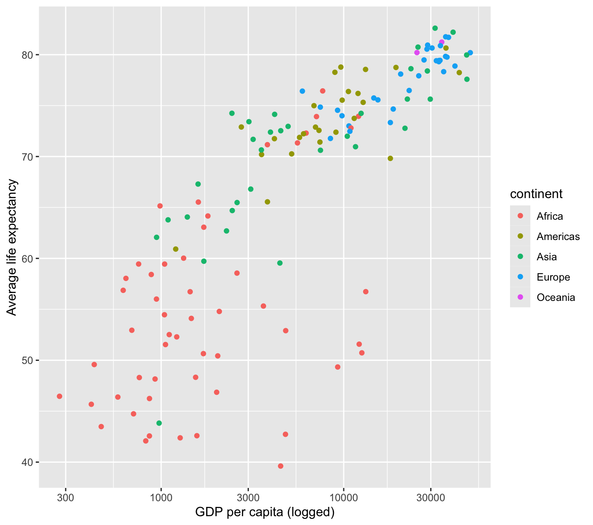
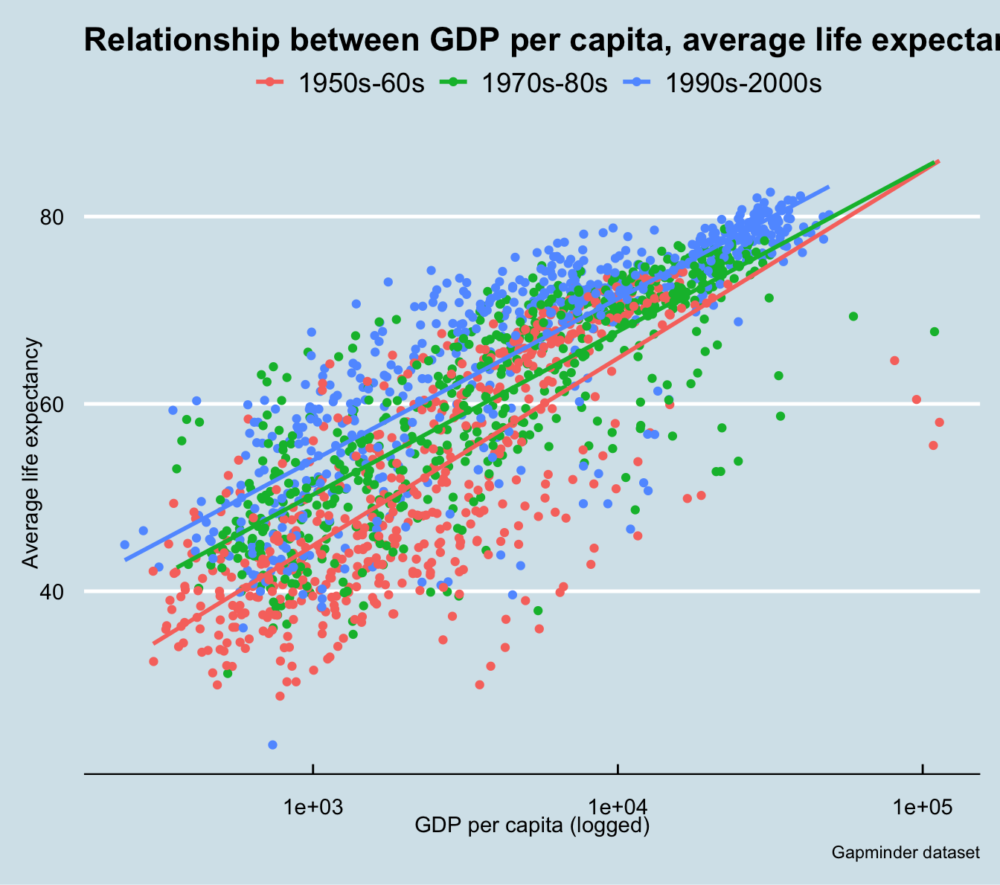

This workshop session will help you familiarize with two of R’s most widely used packages, dplyr and ggplot2. These packages are part of what is called the tidyverse, which is a collection of packages that are designed to work together in R to simplify and data manipulation, discovery, visualization, analysis, and more.1
Each tile is a package that makes up the “tidyverse”
dplyr is designed to standardize the data management and manipulation process in R. dplyr has a small set of functions that help users navigate the most common challenges of data manipulation.2 Generally speaking, these include restructuring, filtering, grouping, and summarizing your data, as well as creating new variables for your analysis.
ggplot2 is a package for visualizing data. In this lesson, we will learn the building blocks for creating beautiful visualizations. We will learn how to produce histograms, scatter plots, and line plots, and we will visualize ungrouped and grouped data.
dplyr and ggplot2 are packages that supply a grammar for data manipulation and data visualization, respectively. This workshop will only scratch the surface of what is possible, but learning the fundamentals of these packages can empower you to do a ton of exciting things in R.
Introduction
Workshop format and key terms
Two quick notes on the format of this workshop:
There are links to additional resources in the end notes of this document. I have personally used most of these resources to build my skills in R, so I hope you will find them useful, too.
Throughout the workshop, there will be exercises to complete on your own or with your table mates. Do you best to complete these based on what you’ve learned. If you get stuck, you can click the “Code” button on the right to show the code that I would use to answer the question. Use that to test yourself and figure out why it works.
There are a few key terms that we’ll use throughout this session.
Term
Definition
Functions
You give R an input, it generates an output. A give-away that you’re working with a function is parentheses.
Arguments
Functions take arguments as their input. If you’re ever unsure of which arguments that a function takes, you can type args(“function name”), ?(“function name”), or help(“function name”).
Packages
A collection of code, functions, documentation, and occasionally data, created and curated by users of the R community.
Working directory
This is the location on your computer where all files relevant to your project are saved. Any files that are imported to or exported from your analysis should be here. Think of this as your project’s home base.
Object
R is an object-oriented programming language, meaning that you can assign meaning to a user-defined string that you can then manipulate or visualize. In R, you can assign objects with the “<-” assignment operator. It can be a single value, list of values, a full data set, a function, etc. In this session, the primary object that we’ll use is the gapminder dataset.
Setting up your R Project environment
To get started, we need to set up our new project environment, with the following steps:
Open R Studio, and go to File –> New Project.

2. Select New Directory.

3. Select New Project.

4. Type in a name for your project under “Directory name”. Choose the location where you want this R Project to live on your computer. Select Create Project.

These steps have established a directory on your computer where your R project lives. This is a very good practice to keep when you are starting a new analysis. You will keep all related files in this project folder, and R will know that this is your working directory (where all files relevant to your project are saved).
Finally, go to File –> New File –> R Notebook. R notebook files are an excellent way to perform an analysis, because they allow for R code and documentation to work side-by-side. This enables you to tell a story that moves alongside your quantitative analysis, and it can be output in all kinds of formats, including Word documents, .pdfs, and .html files.

We could do a full session on R projects and notebooks, but this should be sufficient to get you started.
The Gapminder dataset
Hans Rosling – our favorite Swedish statistician
We’ll learn the main dplyr functions using the gapminder dataset. Now that we have our project environment set up, some brief refreshers from the previous workshop:
Install the tidyverse and gapminder packages (install.packages())
Load the tidyverse and gapminder packages (library() and require() effectively do the same thing, but library() provides more information that is occasionally useful)
library(tidyverse) #for data management, manipulation, visualization, and exploratory data analysis
── Attaching core tidyverse packages ──────────────────────── tidyverse 2.0.0 ──
✔ dplyr 1.1.4 ✔ readr 2.1.5
✔ forcats 1.0.0 ✔ stringr 1.5.1
✔ ggplot2 3.5.1 ✔ tibble 3.2.1
✔ lubridate 1.9.3 ✔ tidyr 1.3.1
✔ purrr 1.0.2
── Conflicts ────────────────────────────────────────── tidyverse_conflicts() ──
✖ dplyr::filter() masks stats::filter()
✖ dplyr::lag() masks stats::lag()
ℹ Use the conflicted package (<http://conflicted.r-lib.org/>) to force all conflicts to become errors
library(gapminder) #for the gapminder dataset
Type in data("gapminder") to read in the gapminder dataset as an object in your global environment.
data("gapminder")
Look at the structure of the gapminder dataset (str() and glimpse() both work here)
Looking at the general structure of the dataset gives us a few useful insights:
Object class
Rows and columns
Variable types: factor (categorical) vs. numeric/integer
Use the summary() command to produce a high-level statistical summary of the variables.
summary(gapminder)
country continent year lifeExp
Afghanistan: 12 Africa :624 Min. :1952 Min. :23.60
Albania : 12 Americas:300 1st Qu.:1966 1st Qu.:48.20
Algeria : 12 Asia :396 Median :1980 Median :60.71
Angola : 12 Europe :360 Mean :1980 Mean :59.47
Argentina : 12 Oceania : 24 3rd Qu.:1993 3rd Qu.:70.85
Australia : 12 Max. :2007 Max. :82.60
(Other) :1632
pop gdpPercap
Min. :6.001e+04 Min. : 241.2
1st Qu.:2.794e+06 1st Qu.: 1202.1
Median :7.024e+06 Median : 3531.8
Mean :2.960e+07 Mean : 7215.3
3rd Qu.:1.959e+07 3rd Qu.: 9325.5
Max. :1.319e+09 Max. :113523.1
Before we start into the gapminder analysis, note that this is a “cleaned” dataset. There are no missing values, major issues with data types, or values that could be flagged as suspicious. That was a conscious choice for this workshop, so that we could get into data manipulation and visualization. In your own work, it is extremely likely that you will need to do more data preparation before analysis.
dplyr’s main functions
distinct()
To begin our anlaysis, let’s look at the years that are available in the gapminder dataset. There are many ways to do this, but I’ll use the distinct() function from dplyr.
Create a new code chunk (Ctrl + Alt + I), and type gapminder %>% distinct(year). Then, execute the code chunk (with the green play button in the upper righthand corner of the chunk).
This shows us that we have data that are in five-year increments from 1952 to 2007.
Before we move on, let’s take a closer look at the code above, because it uses a style that we will be fluent in by the end of this session. This code uses “piping” (the %>%), which is a coding style that makes code more readable and easier to troubleshoot.3 The “pipe” (%>%) tells R to take the object to the left of the pipe and feed it to the first argument in the code following the pipe. The code above can be read as:
Take the gapminder dataframe and feed it into the distinct() function, THEN
Return the distinct or unique values in the year column
When reading your code, you can think of the pipe operator (%>%) as “THEN”. To use the above example, take the gapminder dataframe, THEN return the distinct values in the year column.
Let’s look at the distinct continents in the gapminder dataset. In your code chunk, relace distinct(year) with distinct(continent). Then, with your cursor on the same line as the code, use the keyboard shortcut for running a block of code (Ctrl + Enter).
gapminder %>%distinct(continent)
# A tibble: 5 × 1
continent
<fct>
1 Asia
2 Europe
3 Africa
4 Americas
5 Oceania
This is how the code looks without piping. Not too difficult (yet).
distinct(gapminder, continent)
This simple example does not convey the full value of piping, but that will be clear by the end of the session.
filter()
The filter() function allows you to subset your data by values of the variables in your dataset.
We’re going to use piping a lot in this session, so let’s get comfortable with it. Try using the pipe operator keyboard shortcut (Ctrl + Shift + M) with your code from this point forward.
Let’s filter the gapminder dataframe to look at only the values in the year 2007.
gapminder %>%filter(year ==2007)
# A tibble: 142 × 6
country continent year lifeExp pop gdpPercap
<fct> <fct> <int> <dbl> <int> <dbl>
1 Afghanistan Asia 2007 43.8 31889923 975.
2 Albania Europe 2007 76.4 3600523 5937.
3 Algeria Africa 2007 72.3 33333216 6223.
4 Angola Africa 2007 42.7 12420476 4797.
5 Argentina Americas 2007 75.3 40301927 12779.
6 Australia Oceania 2007 81.2 20434176 34435.
7 Austria Europe 2007 79.8 8199783 36126.
8 Bahrain Asia 2007 75.6 708573 29796.
9 Bangladesh Asia 2007 64.1 150448339 1391.
10 Belgium Europe 2007 79.4 10392226 33693.
# ℹ 132 more rows
This returns the 142 records (or rows) that are in the year 2007.
What’s the double equal sign (“==”) mean? This is a boolean equal, meaning that it is evaluating whether the equation returns a TRUE or FALSE. The above code can be read as “filter, return rows in which the variable year equals 2007”. All rows that would return a TRUE for “year equals 2007” are displayed.
You can also use the filter() command on multiple conditions, too. Just separate the conditions with a comma. The code below takes the gapminder dataframe, and filters the data in which the country is South Africa and the year is 2007.
gapminder %>%filter(country =='South Africa', year ==2007)
# A tibble: 1 × 6
country continent year lifeExp pop gdpPercap
<fct> <fct> <int> <dbl> <int> <dbl>
1 South Africa Africa 2007 49.3 43997828 9270.
This shows that the dataset has only one occurrence of South Africa in 2007. Note that in dplyr, separating arguments with a comma allows you to combine multiple logical expressions. How would you read the above code aloud?
One thing to keep in mind – your data object remains unchanged, unless you assign the filter() to a new object. To save the above code as a new object, you need to assign it to a new named object, such as:
The arrange() function sorts your data – a very common thing to do in an exploratory data analysis. Let’s arrange the gapminder data by life expectancy (the variable is called lifeExp).
gapminder %>%arrange(lifeExp)
# A tibble: 1,704 × 6
country continent year lifeExp pop gdpPercap
<fct> <fct> <int> <dbl> <int> <dbl>
1 Rwanda Africa 1992 23.6 7290203 737.
2 Afghanistan Asia 1952 28.8 8425333 779.
3 Gambia Africa 1952 30 284320 485.
4 Angola Africa 1952 30.0 4232095 3521.
5 Sierra Leone Africa 1952 30.3 2143249 880.
6 Afghanistan Asia 1957 30.3 9240934 821.
7 Cambodia Asia 1977 31.2 6978607 525.
8 Mozambique Africa 1952 31.3 6446316 469.
9 Sierra Leone Africa 1957 31.6 2295678 1004.
10 Burkina Faso Africa 1952 32.0 4469979 543.
# ℹ 1,694 more rows
This shows us that Rwanda in 1992 is the lowest life expectancy in the dataset. By default, the arrange() function sorts your data in ascending order. What if we want to sort the data by the largest GDP per capita (variable is gdpPercap) in the dataset?
gapminder %>%arrange(-gdpPercap)
# A tibble: 1,704 × 6
country continent year lifeExp pop gdpPercap
<fct> <fct> <int> <dbl> <int> <dbl>
1 Kuwait Asia 1957 58.0 212846 113523.
2 Kuwait Asia 1972 67.7 841934 109348.
3 Kuwait Asia 1952 55.6 160000 108382.
4 Kuwait Asia 1962 60.5 358266 95458.
5 Kuwait Asia 1967 64.6 575003 80895.
6 Kuwait Asia 1977 69.3 1140357 59265.
7 Norway Europe 2007 80.2 4627926 49357.
8 Kuwait Asia 2007 77.6 2505559 47307.
9 Singapore Asia 2007 80.0 4553009 47143.
10 Norway Europe 2002 79.0 4535591 44684.
# ℹ 1,694 more rows
#you could also do...#gapminder %>% # arrange(desc(gdpPercap))#or if you wanted to return the top X GDP per capita records#you could use the top_n() function from dplyr#gapminder %>%# arrange(-gdpPercap) %>% # top_n(15, gdpPercap)
Exercises:
You can also arrange by multiple variables with the arrange() function. Let’s say that you want to arrange the gapminder data by year and by life expectancy. Try using gapminder %>% arrange(year, lifeExp). What do you see?
gapminder %>%arrange(year, lifeExp)
Let’s put the filter() and arrange() functions together. I’d like to see the life expectancy of all Asian countries from the year 2000 to the most recent year, sorted in ascending order. How might we do that?
When you are combining multiple functions, the power and clarity of piping becomes more obvious. This is what the previous code would look like without piping.
arrange(filter(gapminder, year >= 2000, continent == ‘Asia’), lifeExp)
Who would like to try to read this?
Without piping, you need to write this code inside-out! Does anyone actually find this easier?!
mutate()
In data analysis, it’s common to want to create or derive new variables from your original dataset. This is done with the dplyr::mutate() function. For example, you might want to create a variable that is the distance in time from the beginning of the dataset. This is a typical derived variable used in regression modeling.
For these new variables, let’s save this as a new data object.
gapminder <- gapminder %>%mutate(time_dist = year -1952)print(gapminder)
# A tibble: 1,704 × 7
country continent year lifeExp pop gdpPercap time_dist
<fct> <fct> <int> <dbl> <int> <dbl> <dbl>
1 Afghanistan Asia 1952 28.8 8425333 779. 0
2 Afghanistan Asia 1957 30.3 9240934 821. 5
3 Afghanistan Asia 1962 32.0 10267083 853. 10
4 Afghanistan Asia 1967 34.0 11537966 836. 15
5 Afghanistan Asia 1972 36.1 13079460 740. 20
6 Afghanistan Asia 1977 38.4 14880372 786. 25
7 Afghanistan Asia 1982 39.9 12881816 978. 30
8 Afghanistan Asia 1987 40.8 13867957 852. 35
9 Afghanistan Asia 1992 41.7 16317921 649. 40
10 Afghanistan Asia 1997 41.8 22227415 635. 45
# ℹ 1,694 more rows
Exercises:
Use dplyr::mutate() to create two other variables – GDP and population (in millions). Note that just like the filter() function, which allows you to have multiple conditions, you can also create multiple new variables by using a comma within mutate().
In your own anlayses, you’ve probably calculated summary stats for variables. Earlier, we used summary(gapminder) to get an overview of the gapminder dataset, based on some preset functions. summarise() can produce the same summary statistics as summary(), but you have total control over the output (it can do some neat things with grouped data, too, which you will see later). Think of summarise() as useful when you want to condense many rows of data down into a smaller number of rows with summary information.
The summarise() function follows the same syntax as mutate(), which is used for creating or deriving new variables, too. The difference is that summarise() is creating a new grouped variable with an aggregate function. Using the gapminder dataset as an example, what is the mean life expectancy from the dataset?
This code is returning the average life expectancy for all countries and years in the dataset.
Exercise:
What happens if you use mutate() instead of summarise() to calculate the average life expectancy for the data? Why is that different from using summarise()?
gapminder %>%mutate(meanlifeExp =mean(lifeExp))
This may be useful for your research question, but it is far more likely that you’ll want to summarise a variable like lifeExp by a grouping variable. For instance, what is the average life expectancy from this dataset by year? Anytime you want to summarise a variable “BY” another variable, dplyr::group_by() comes in handy.
The above code groups the gapminder dataset by the year variable and computes the average life expectancy per year. This shows the gradual advancement in global average life expectancy over time. Pretty neat!
The gapminder dataset begs the question: how has the average life expectancy changed over time and across continents? Said another way, how has average life expectancy changed BY year and BY continent? BY is a hint that you want to group your data to answer your question. Just like previous functions that we’ve learned (such as filter() and mutate()), you can group your data by multiple conditions with comma.
`summarise()` has grouped output by 'year'. You can override using the
`.groups` argument.
# A tibble: 60 × 3
# Groups: year [12]
year continent meanlifeExp
<int> <fct> <dbl>
1 1952 Africa 39.1
2 1952 Americas 53.3
3 1952 Asia 46.3
4 1952 Europe 64.4
5 1952 Oceania 69.3
6 1957 Africa 41.3
7 1957 Americas 56.0
8 1957 Asia 49.3
9 1957 Europe 66.7
10 1957 Oceania 70.3
# ℹ 50 more rows
With this code, we’re able to see some strong variability in average life expectancy by continent. This is worth exploring more closely.
Exercises:
I’d like to create a new grouped summary dataframe with the gapminder dataset. Group gapminder by year and continent, and generate the following summary calculations:
The total population (sum())
The mean life expectancy (mean())
The mean GDP per capita (mean())
The count of countries in the dataset in each continent/year pair (n())
Save this to a new object called gapminder_by_year_continent.
What is the difference between summary() and summarise(), and when would you use them?
There’s so much that you can do with the dplyr verbs working together. group_by() is often combined with summarise(), but you can also use it with mutate(). For instance, you could group the gapminder dataset by year and produce within year rankings for life expectancy.
# A tibble: 1,704 × 9
# Groups: year [12]
country continent year lifeExp pop gdpPercap time_dist gdp
<fct> <fct> <int> <dbl> <dbl> <dbl> <dbl> <dbl>
1 Norway Europe 1952 72.7 3.33 10095. 0 3.36e10
2 Iceland Europe 1952 72.5 0.148 7268. 0 1.08e 9
3 Netherlands Europe 1952 72.1 10.4 8942. 0 9.28e10
4 Sweden Europe 1952 71.9 7.12 8528. 0 6.08e10
5 Denmark Europe 1952 70.8 4.33 9692. 0 4.20e10
6 Switzerland Europe 1952 69.6 4.82 14734. 0 7.09e10
7 New Zealand Oceania 1952 69.4 1.99 10557. 0 2.11e10
8 United Kingdom Europe 1952 69.2 50.4 9980. 0 5.03e11
9 Australia Oceania 1952 69.1 8.69 10040. 0 8.73e10
10 Canada Americas 1952 68.8 14.8 11367. 0 1.68e11
# ℹ 1,694 more rows
# ℹ 1 more variable: lifeExp_rank <dbl>
Visualization with ggplot2
ggplot2 is a tremendously flexible visualization package in R. “Gg” stands for the “grammar of graphics”, which is an effort to build a language around how analysts define elements of a visualization. The rationale behind the development of ggplot2 is simple. If you have a way of communicating elements of a data visualization with precision, then you can develop and collaborate more effectively.
There are three primary elements of ggplot2 graphics:
The data that you want to visualize.
The aesthetics (or aesthetic mappings) of the graphic, the variables that make up the visualization.
The geoms, or the type of visualization that you want to create (scatterplot, bar plot, line graph, histogram, etc.).
There are many, many types of visualizations supported, so mastering these elements unleashes a ton of possibilities.4 We will come back to each of the elements for every viz that we create.
Histograms
Let’s begin with histograms:
First, using the piping that we learned previously, filter the gapminder data to only include the 2007 rows.
Then, let’s start defining the ggplot2 elements (data, aesthetics, geoms). Click on the “Code” box below to walk through an example.
`stat_bin()` using `bins = 30`. Pick better value with `binwidth`.

Let’s examine the code before we unpack the graphic:
You’ll recall from the dplyr functions that we’ve learned so far that piping is an effective way to write code that flows between functions. First, we piped the gapminder data to filter(), then we piped that filtered dataframe to ggplot().
Within ggplot’s functions (ggplot() and geom_histogram()) we always use a plus sign. Think of ggplot as a canvas where the graphic is built by the addition of elements.
Then, we defined the aesthetics (aes()), or what we wanted to graph. In a histogram, you are simply visualizing the distribution of one variable, so you only need to tell ggplot which variable to visualize (within x=).
Finally, we added the geom to the aesthetic, which tells ggplot the type of graphic that we wanted to create (geom_histogram()).
We’ll get more practice with ggplot’s three elements – data, aesthetics, and geoms – as we go.
Scatter plots
What might explain the variation in life expectancy across countries (think variables from the Gapminder dataset)?
Scatter plots show the relationship between two variables. Let’s create a viz of the relationship between GDP per capita and life expectancy in 2007. Using the previous histogram code as our starting point, we would need to change two things:
Since scatter plots visualize two variables, we need to add a y=gdpPercap to our aesthetic.
Instead of using geom_histogram(), we will use geom_point() for a scatter plot.
Many countries are clustered below $10,000 per capita, but the range of average life expectancy is quite dramatic.
There is a saturating behavior in the data, meaning that at a certain average life expectancy (about 75 and up), income does not seem to have a strong relationship with life expectancy outcomes.
There appears to be a strong logarithmic relationship between these variables, meaning that the x-axis has a scale that increases in orders of magnitude (1,000 - 10,000 - 100,000).
The above graphic is very interesting. However, the gapminder dataset has additional information that could be put to use to extract more value from this viz. Let’s see what this looks like when you color each point by the continent. To do this, add color=continent to the aesthetic.
There are dozens of ways that you can customize ggplot2 visualizations. With enough practice, you can have total control of the visualizations that you create. Let’s start with two very common and useful customizations:
Putting the x-axis on a logarithmic scale, and
Changing the axis labels.
To transform the x-axis to a logarithmic scale, simply add scale_x_log10() to the previous visualization’s code. This will compress the x-axis and show a more linear relationship than the previous graphic.
gapminder %>%#DATAfilter(year ==2007) %>%#DATAggplot(aes(x=gdpPercap, #AESTHETICy=lifeExp, #AESTHETICcolor=continent)) +#AESTHETICgeom_point() +#GEOMscale_x_log10() #CUSTOMIZING ELEMENT

The labs() command in ggplot allows users to take control of the axis labels.
gapminder %>%#DATAfilter(year ==2007) %>%#DATAggplot(aes(x=gdpPercap, #AESTHETICy=lifeExp, #AESTHETICcolor=continent)) +#AESTHETICgeom_point() +#GEOMscale_x_log10() +#CUSTOMIZING ELEMENTlabs(x='GDP per capita (logged)', #CUSTOMIZING ELEMENTy='Average life expectancy') #CUSTOMIZING ELEMENT

Exercise:
Create another scatterplot with another variable combination from the gapminder dataset.
Line plots
Line plots are typically used to visualize the behavior of a variable over some component of time. Let’s go back to the gapminder_by_year_continent dataframe that we created earlier. This is a dataframe with summary stats by continent and year. We’ll use this data to create a line graph showing the average life expectancy by continent over time.
Exercises:
We have the data element already (gapminder_by_year_continent). What are the other two ggplot elements that we need to create a graphic?
What would be our x= and y= arguments in the aesthetic?
gapminder_by_year_continent %>%ggplot(aes(x=year,y=meanlifeExp,group=continent,color=continent)) +geom_line() +ggtitle('Life expectancy by continent over time',subtitle ='Gapminder dataset') +labs(x='Year',y='Average life expectancy')
This plot shows us very clearly the gap between Africa and all other continents in life expectancy over time.
Exercises:
Plot another one of the summarised variables from the gapminder_by_year_continent dataframe over time.
Using the gapminder dataframe, filter() the data on a country of your choice, and visualize a line plot over time (any variable you’d like).
ex_country <-c('Zambia', 'China', 'Argentina', 'Bulgaria')gapminder %>%filter(country %in% ex_country) %>%ggplot(aes(x=year,y=lifeExp,color=country)) +ggtitle('Average life expectancy at birth, select countries',subtitle ='1957-2007') +labs(x='Year',y='Life expectancy at birth (years)',caption='Gapminder dataset',color='') +geom_line() +theme(legend.position ='top')
Extended use of ggplot2
There are many, many ways that you can customize or expand your visualization repertoire by understanding the three basic elements of ggplot graphics. Here is a look at two other extensions (you can just follow along):
The ggthemes package allows for replicating the visualization themes of some major publications, including The Economist, The Wall Street Journal, and FiveThirtyEight.
#install.packages("ggthemes")library(ggthemes)
You can also plot multiple geoms on the same graphic, which can be very useful in highlighting a story from your data.
What if you wanted to show a story of the improvement of life expectancy over time? You might want to fit a linear regression model to your scatter plot. The code below demonstrates how this might be done, using the visualization theme from The Economist.
gapminder %>%mutate(generation=ifelse(year <1970, '1950s-60s',ifelse(year >=1970& year <1990, '1970s-80s', '1990s-2000s'))) %>%ggplot(aes(x=gdpPercap,y=lifeExp,color=generation)) +geom_point() +scale_x_log10() +geom_smooth(method ="lm", se=FALSE) +ggtitle('Relationship between GDP per capita, average life expectancy, and time') +labs(x='GDP per capita (logged)',y='Average life expectancy',color='',caption='Gapminder dataset') +theme_economist()
`geom_smooth()` using formula = 'y ~ x'

Re-cap and resources
If you’ve stayed with us this long, you’ve learned quite a few data management, manipulation, and visualization skills. The dplyr package has a collection of simple, yet powerful management and analysis tools. In this session, you practiced the following:
dplyr function
Purpose
dplyr::distinct()
Returns the unique values of a variable
dplyr::filter()
Returns the observations, or rows, based on logic that you determine
dplyr::arrange()
Changes the ordering of the rows
dplyr::mutate()
Adds new variables that are functions of existing variables
dplyr::summarise()
Reduces multiple values down to a single summary
dplyr::group_by()
Groups observations by categorical variables for summary analysis
You’ve also learned how to use ggplot2 to visualize your data, by specifying the main elements of ggplot graphics:
ggplot element
Purpose
Data
The dataset that you want to visualize
Aesthetics, or aesthetic mappings
The variables from the dataset that you want to visualize (and how you want to visualize them)
Geoms
The type of visualization that you want to create (scatter, bar plot, line plot, histogram, etc.)
Finally, you’ve learned three of the most common types of visualizations – histograms, scatterplots and line plots – with geom_histogram(), geom_point(), and geom_line(), respectively. You’ve learned how to make small customizations to your graphics to improve the effectiveness and the amount of information contained in your visualizations, such as adding axis labels and a title, coloring your plot by another variable, and changing the scale of an axis. There are endless options/customizations within ggplot2, and it’s an incremental process to reach mastery. (Hopefully, a future Pardee Methods Workshop will focus exclusively on visualizing data in R!)
There are many other dplyr functions and ggplot2 customizations that we couldn’t cover, such as:
dplyr::select() returns the variables, or columns, that you wish to work with.
dplyr::rename() allows you to change a variable name.
dplyr::left_join() and dplyr::inner_join() are the most common functions to join two related dataframes.
And there are dozens of other ggplot geoms and themes to take complete control over your graphics.
There are TONS of great resources for learning R. You might check out:
Package vignettes are a great way to learn about a package or a particular function. Just type in “?InsertPackageName” or “?InsertFunctionName” (quotations excluded) to find information from R Studio’s help panel. (FREE)
The John’s Hopkins Data Science Coursera6 (FREE option available)
Swirl is an interactive course run through an R package7 (FREE)
R Studio hosts cheat sheets for some of the most common issues, packages, and functions – including dplyr and ggplot28 (FREE)
There are many ggplot galleries available online that might inspire you to learn new visualization types9 (FREE)
Some parting thoughts, borrowed from a data science blog:
Type everything. I know you can just copy and paste from the tutorial, but do yourself a favor and type it out. You will start learning the subtleties of the syntax and get used to typing in new ways.
Break everything and make mistakes. When you run code that gives you the results you want, don’t stop there. Change the wording, change the symbols, try different combinations. You reinforce what is correct by understanding what is wrong and of course how to fix mistakes. Learning to fix mistakes is the fastest most effective way of learning programming (actually this is true when learning anything).
Teach others. One way to make sure you understand a concept is to explain it to someone else. http://cierareports.org/blog/2013/10/18/rCourse2013/
For an extremely in-depth article on pipe operators, including where they came from and why they are so useful, see here: https://www.datacamp.com/community/tutorials/pipe-r-tutorial↩︎
This is a useful reference for learning about all of the geom options in ggplot. This might look overwhelming, but it is something that you pick up more as you move into more exotic visualization types. (http://ggplot2.tidyverse.org/reference/#section-layer-geoms)↩︎